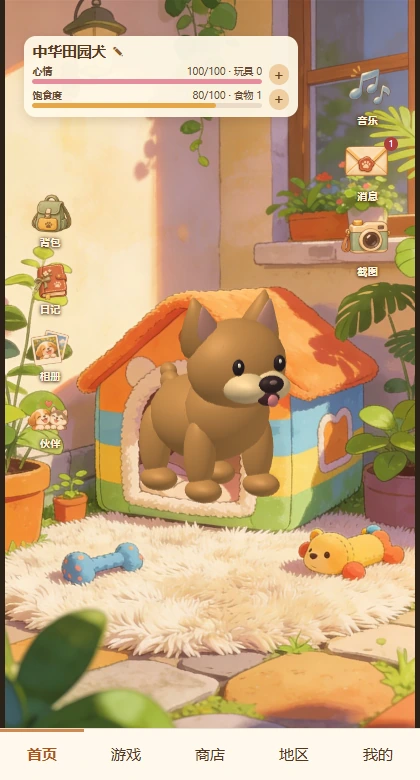
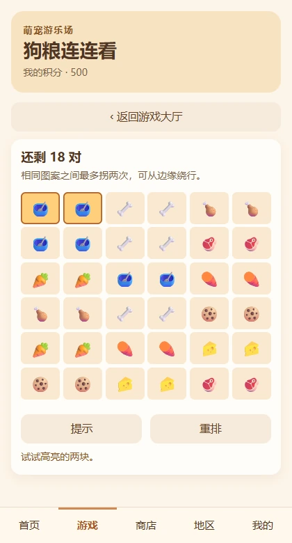
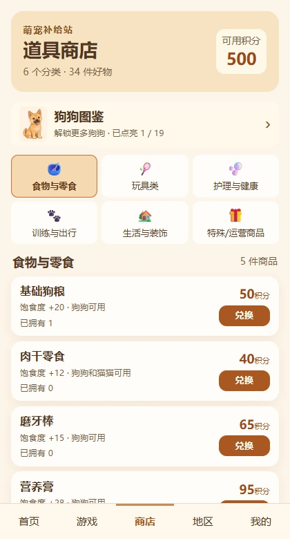
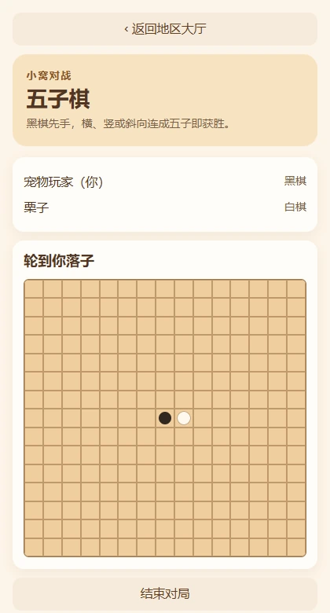
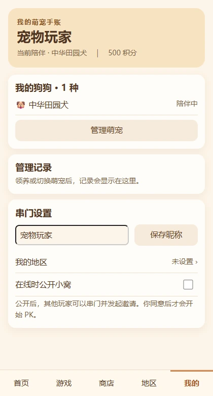

首页
照料狗狗，布置小院
给狗狗取名，查看饱腹与心情，按需使用补给。背包、拍照和相册从小院内打开。


01 · 灵感来源
灵感来自电子宠物带来的日常陪伴感。项目把这份体验放进一座可以随时回来的小院，从一只中华田园犬开始，用喂食、互动和布置这些日常动作，让玩家慢慢把小院变成自己的地方。
设计上的关键是让小游戏的奖励回到养宠本身。赚来的积分可以换补给和装饰，也可以用来解锁新的狗狗。
02 · 功能与实拍
以下画面截自本地运行的网页版。地区截图使用两个独立演示存档。
首页
给狗狗取名，查看饱腹与心情，按需使用补给。背包、拍照和相册从小院内打开。

游戏
游乐场有狗粮连连看、狗狗知识挑战和接狗粮。连连看提供提示和重排，方便卡住时继续玩。

商店
用积分兑换补给、玩具和装饰，或到狗狗图鉴解锁新伙伴。商店直接显示价格、持有量和道具作用。

地区
查看公开且在线的小窝，串门后可以邀请对方玩五子棋、知识竞速等多人玩法。玩家接受邀请后才开局。

我的
查看已领养的狗狗、当前伙伴和管理记录，也可以在这里设置昵称、地区及小窝公开状态。

公开网页版可体验单人玩法，进度保存在当前浏览器。地区 PK 需要配套的联机服务。
03 · 创作意义
这个项目探索的是一种轻量陪伴体验。一次喂食、一局游戏或一张小院照片，都能给玩家一个短而具体的互动。装饰、解锁与成长记录则把这些零散的片段留在同一个地方。
从微信小程序做到浏览器试玩版时，网页复用了原有素材和游戏逻辑。这让我能把精力放在养成循环和交互细节上，也让作品集访客可以直接体验玩法。